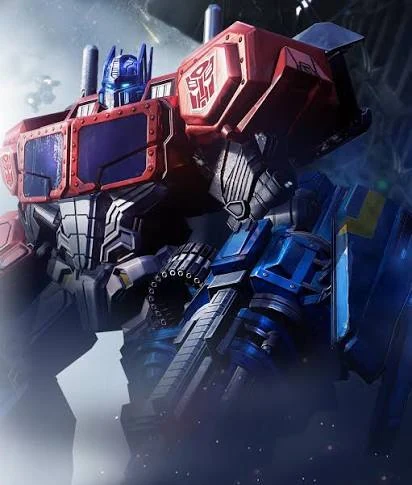
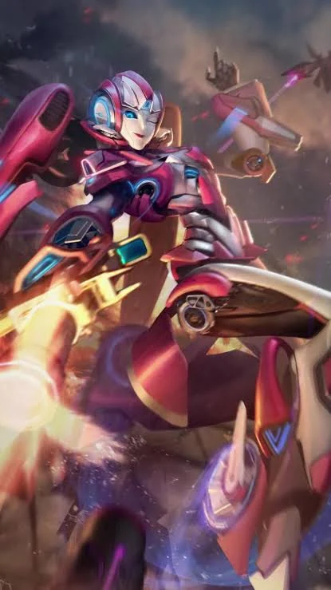

Независимый проект сообществаEST. 2026
TRANSFORMERS ONLINE
Demo 0.1
Demo 0.1 доступна для Windows: лаунчер Start Game, локальный тестовый сервер и инструменты восстановления TFOL. Это ранняя тестовая сборка; для игры нужны отдельно установленные оригинальные файлы.
Demo 0.1 · доступна · Windows ZIP · 32,9 МБ
UE4Движок оригинальной игры
RU / ENРабота над локализацией
OPEN SOURCEОткрытые инструменты
DEMO 0.118 октября 2026
01 / О проекте
О Reactivate TFOL
Независимая работа над исследованием и восстановлением Transformers Online.
01 // TRANSFORMERS ONLINE
Проект сообщества
Репозиторий на GitHub ↗
Восстановление и тестирование
Reactivate TFOL — независимый проект восстановления Transformers Online. Мы исследуем оригинальный клиент и работаем над сервером, лаунчером и совместимостью игровых систем.
Demo 0.1 — ранняя тестовая версия, а не завершённая игра. Состав доступных функций и известные ограничения будут указаны в примечаниях к релизу. Исходники и технические заметки доступны на GitHub.
✓Документация и история изменений
✓Сервер и лаунчер
✓Интерфейс и RU/EN-локализация
02 / Персонажи
Мир Transformers Online
Знакомые персонажи из материалов игры.

03 / Разработка
Ход работ
Отдельные технические этапы из репозитория.
50OBT33
Техническая заметка
Меню Искр
Работа со слотами, предметами и схемами. Интеграцию с клиентом ещё нужно проверить.
48OBT33
Техническая заметка
Лаунчер и перевод
Языковые ресурсы, интерфейс лаунчера и исправления скинов.
DEVTOOLS
В работе
Инструменты обновления
Лаунчер, проверка обновлений и работа с файлами.
04 / Загрузки
Demo 0.1
Demo 0.1 опубликована. Скачайте проверенный Windows-архив прямо с GitHub Releases.
Доступна · Demo 0.1 · Windows
Demo 0.1 — Launcher Rechecked
Архив 32,9 МБ для Windows. После распаковки запустите Release/Start Game.exe и выберите установленный оригинальный клиент TFOL. Реальные OB15, PvE и онлайн-матчи ещё не восстановлены полностью.
Контрольная сумма SHA-256 (.sha256) · Windows · 32,9 МБ
!
Независимый некоммерческий фанатский проект. Не связан с Hasbro, Takara Tomy или правообладателями Transformers.
05 / FAQ
Вопросы и ответы
Коротко о релизе и участии в проекте.
Что будет в Demo 0.1?+
Это ранняя тестовая версия. Перечень возможностей и ограничений будет опубликован вместе с релизом; работа всех сетевых режимов пока не подтверждена.
Где скачать Demo 0.1?+
Скачай ZIP в разделе «Загрузки» на этом сайте. Файл размещён в GitHub Release demo-0.1; проверь SHA-256 перед установкой.
Будет ли русский и английский перевод?+
Проект работает над локализацией на RU/EN. Полный перевод оригинального клиента пока не подтверждён. Сайт доступен на двух языках.
Как помочь проекту?+
Можно сообщать об ошибках через GitHub Issues, помогать с документацией и тестированием. Не загружай игровые файлы правообладателей и чужие пользовательские данные.